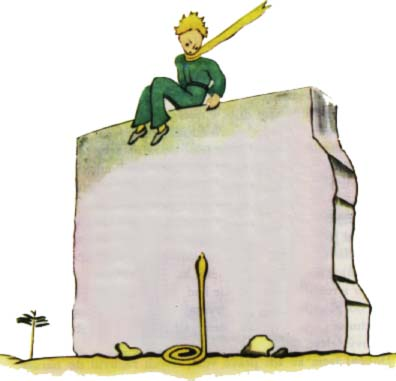
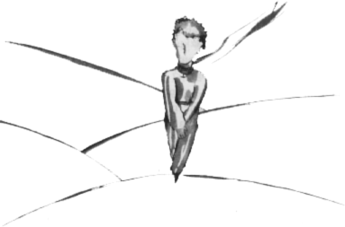
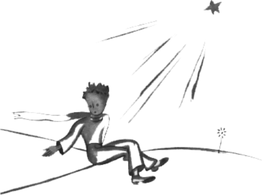
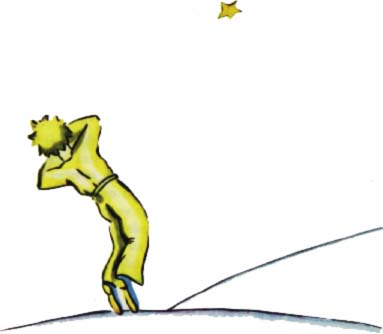

Nìjaký hlas mu zøejmì odpovìdìl, proto¾e malý princ namítl:
"Ale ano, je to ten den, ale ne to místo..."
©el jsem dál ke zdi. Stále jsem nikoho nevidìl ani nesly¹el. Pøesto malý princ nìkomu zase øekl:
"...Jistì. Uvidí¹, kde zaèíná v písku moje stopa. Jen tam na mne èekej. Budu tam dnes v noci."
Byl jsem u¾ jen dvacet metrù od zdi a stále jsem nic nevidìl. Po chvíli mlèení malý princ je¹tì dodal:
"Má¹ dobrý jed? Jsi jist, ¾e mì nenechá¹ dlouho trpìt?"
Zastavil jsem se, srdce se mi sevøelo, ale stále jsem tomu nerozumìl.
"A teï jdi pryè!" øekl. "...Já chci zase dolù!"

Podíval jsem se dolù ke zdi a vyskoèil jsem! Proti malému princi se tam zvedal jeden z tìch ¾lutých hadù, kteøí vás v pùlminutì sprovodí ze svìta. Sáhl jsem do kapsy pro revolver a rozbìhl jsem se. Ale had, sotva mì zaslechl, vklouzl ti¹e do písku, jako opadá tryskající pramen, a bez velkého spìchu se protáhl mezi kameny, zanechávaje za sebou lehký kovový ¹elest.
Dobìhl jsem ke zdi právì vèas, abych zachytil do náruèe svého malého prince, bledého jako sníh.
"Copak to znamená? Ty se teï dává¹ do øeèi s hady?"
Sundal jsem mu zlatì ¾lutý ¹átek, který vìènì nosil na krku. Smoèil jsem mu spánky a dal jsem mu napít. Neodva¾oval jsem se ho teï u¾ na nic ptát. Díval se na mne vá¾nì a objal mì kolem krku. Cítil jsem jeho srdce tlouci jako srdíèko postøeleného, umírajícího ptáèka.
Øekl mi:
"To jsem rád, ¾es pøi¹el na to, co tvému stroji chybí. Bude¹ moci domù..."
"Jak to ví¹?"
Právì jsem mu pøicházel oznámit, ¾e proti v¹emu oèekávání se mi práce zdaøila. Neodpovìdìl na mou otázku, ale dodal:
"Já se dnes také vrátím domù..."
Potom pøipojil posmutnìle:
"Mám to mnohem dál... A mnohem nesnadnìj¹í..."
Dobøe jsem cítil, ¾e se dìje nìco neobyèejného. Tiskl jsem ho v náruèí jako malé dítì, a pøesto se mi zdálo, ¾e sklouzává nìkam dolù do propasti a ¾e nemohu nic udìlat, abych ho zadr¾el...
Jeho pohled byl vá¾ný, zahledìný do veliké dálky:
"Mám od tebe beránka. Mám bedýnku pro toho beránka. A náhubek..."
A tesklivì se usmál.
Dlouho jsem èekal. Cítil jsem, jak se mu krev pomalu vrací do ¾il.
"Tys mìl strach, èlovíèku..."
Mìl strach, to» se ví! Ale lehounce se zasmál:
"Dnes veèer se budu bát je¹tì mnohem víc..."
Znovu mì zamrazilo pocitem nìèeho nenapravitelného. Uvìdomil jsem si, jak by to bylo hrozné, kdybych u¾ nikdy nesly¹el ten smích. Byl mi studánkou v pou¹ti.
"Èlovíèku, chci tì je¹tì sly¹et se smát..."
Malý princ mi v¹ak øekl:
"Dnes v noci tomu bude rok. Má hvìzda bude právì nad místem, kam jsem loni spadl..."
"Èlovíèku, viï, ¾e je to zlý sen, to s tím hadem, se schùzkou a s hvìzdou?..."
Ale neodpovìdìl na tu otázku. Pravil:
"Nikdy nevidíme to, co je dùle¾ité..."
"Ov¹em..."
"Je to jako s tou kvìtinou. Má¹-li v lásce kvìtinu, která je na nìjaké hvìzdì, rád se v noci dívá¹ do nebe. V¹echny hvìzdy rozkvétají kvìtinami..."
"Ov¹em..."
"Je to jako s tou vodou. Ta, které jsi mi dal napít, byla jako hudba, to pro ten rumpál a provaz... vzpomíná¹ si?... Byla tak dobrá..."
"Ov¹em..."
"V noci se bude¹ dívat na hvìzdy. Ta moje je pøíli¹ malá, abych ti ji mohl ukázat. Je to tak lépe. Má hvìzdièka bude pro tebe jednou z mnoha hvìzd. Bude¹ tedy rád pozorovat v¹echny hvìzdy. V¹echny budou tvými pøítelkynìmi. A pak, dám ti dárek..."
A znovu se zasmál.
"Ach èlovíèku mùj zlatá, tak rád sly¹ím tvùj smích!"
"Právì to bude mùj dárek... bude to jako s tou vodou..."
"Co tím myslí¹?"
"Lidé mají své hvìzdy, jen¾e ty nejsou stejné. Tìm, kdo cestují, jsou prùvodci. Pro druhé nejsou nièím jiným ne¾ malými svìtýlky. Pro jiné, pro vìdce, znamenají problémy. Pro mého byznysmena byly zlatem. Ale v¹echny ty hvìzdy mlèí. Ty bude¹ mít hvìzdy, jaké nemá nikdo..."
"Co tím myslí¹?"
"Já budu na jedné z nich bydlit, budu se na jedné z nich smát, a a¾ se podívá¹ v noci na oblohu, bude to pro tebe, jako by se smály v¹echny. Ty bude¹ mít hvìzdy, které se umìjí smát!"
A znovu se zasmál.
"A¾ se utì¹í¹ (a èlovìk se v¾dycky utì¹í), bude¹ rád, ¾e jsi mì poznal. Bude¹ stále mým pøítelem. Bude¹ mít chu» se smát se mnou. A nìkdy otevøe¹ okno, jen tak pro radost... Tvoji pøátelé se budou stra¹nì divit, a¾ tì uvidí smát se pøi pohledu na nebe. Øekne¹ jim: "Ano, hvìzdy mì v¾dycky, rozesmìjí!" Budou myslet, ¾e ses zbláznil. Vyvedu ti tak pìkný kousek..."
A opìt se zasmál.
"Bude to, jako kdybych ti dal místo hvìzd spoustu rolnièek, které se umìjí smát..."
A znovu se zasmál. Potom zvá¾nìl.
"Ví¹... ale dnes v noci... sem nechoï!"
"Nehnu se od tebe."
"Budu vypadat, jako by mì nìco bolelo... trochu jako bych umíral. To u¾ tak bývá. Nechoï se na to dívat, nestojí to za to..."
"Nehnu se od tebe."
Jemu to v¹ak dìlalo starost.
"Ví¹... taky kvùli tomu hadovi. Tebe nesmí u¹tknout... Hadi jsou zlí. Mohou u¹tknout jen tak pro potì¹ení..."
"Nehnu se od tebe."
Ale nìco ho uklidnilo:
"Pravda, na druhé u¹tknutí u¾ nemají jed..."
Tu noc jsem nevidìl, kdy se vydal na cestu. Zmizel ti¹e.
Kdy¾ jsem ho koneènì dohonil, ¹el rychlým, odhodlaným krokem. Prohodil jen:
"Ach, ty jsi tady..."

A vzal mì za ruku. Ale znovu se znepokojil:
"Neudìlals dobøe. Zarmoutí tì to. Budu vypadat jako mrtvý, ale nebude to pravda..."
Mlèel jsem.
"Ví¹, je to pøíli¹ daleko. Nemohu s sebou brát tohle tìlo. Je moc tì¾ké."
Mlèel jsem.
Bude to jako stará opu¹tìná skoøápka. Staré skoøápky nejsou nic smutného..."
Mlèel jsem.
Poklesl trochu na mysli. Ale znovu to zkusil:
"Ví¹, bude to pìkné. Já se budu také dívat na hvìzdy. V¹echny budou studny se zrezavìlým rumpálem. V¹echny mi budou dávat pít..."
Mlèel jsem.
"To bude hezké! Ty bude¹ mít pìt set miliónù rolnièek, já pìt set miliónù studánek..."
A také se odmlèel, proto¾e plakal...
"Tady to je. Nech mì jít kousek samotného."
Posadil se, proto¾e mìl strach.

Dodal je¹tì:
"Ví¹... moje kvìtina... jsem za ni zodpovìdný! Je tak slabouèká! A tak naivní. Má jen ètyøi trny, aby ji chránily proti svìtu..."
Sedl jsem si; nemìl jsem u¾ sílu stát. ØEKL:
"Tak... To je v¹echno..."
Je¹tì jednou zaváhal, potom vstal. Udìlal krok. Já jsem nebyl schopen se pohnout.
U jeho kotníku se jen zablesklo cosi ¾lutého. Malý princ na okam¾ik znehybnìl. Nevykøikl. Klesl pomalu, jako padá strom. Byl tam písek, ani sly¹et to nebylo.
